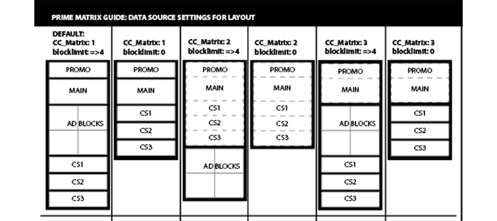

EMAIL INTERFACE UX
UX: Promotional Email Templates & Automation
In this project, I implemented UX concepts to facilitate a better experience and process for the email graphic designers.
-

Empathize & Define
Email Designers had limited creative layouts and fourteen different templates to select from to ensure they were sending the proper email type and layout. At times, the designers would select the wrong template and then have to rebuild the email or change a multitude of settings. Overall, it wasn’t a great user experience for the graphic designers.

Ideate & Prototype
Through the collaboration of an email innovation team I helped lead, we developed the steps for changing our processes and determined the best design would be a single template with selectable standardized creative layouts. Concept “matrix” wireframes were developed to understand the desired layouts

Implementation
To implement this I coded the template with HTML and data RPL(Freemarker) code. On the data side, I set up the template to automatically pull in the email type and set up coded subroutines to be activated by a selectable number to determine the creative layout. The selectable number matched a matrix table of layouts that the designers could choose from. To facilitate implementation further, I wrote work instructions on how to use the new template and matrix.

Feedback & Iteration
I gathered feedback from the designers. Based upon that feedback, I created additional features, including increasing creative spaces, automating sweepstakes creatives and timers. I also made UX readability updates to the email header and footer and eliminated “dark patterns” such as making the opt-out link barely noticeable.